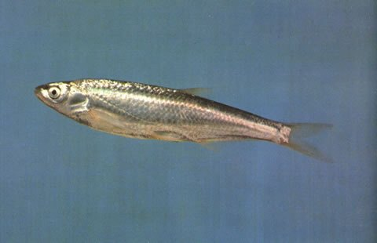

垂钓建议ANGLING
可在允许垂钓的水域尝试。建议使用轻量手竿或溪流竿，细线小钩；饵料以小鱼、虾或腥味饵料为主，重点在江河干流与支流的湾沱、桥墩下游与支流汇口下竿。繁殖期、禁渔期和幼鱼集中时段应主动放流，并遵守当地最小可捕规格。是否可钓以渔业主管部门规定为准。

鲤形目 · 鲴科
Pseudolaubuca engraulis
鲴科中小型鱼类，分布于广东、湖南、湖北、江西、重庆，多见于近底层水层，以底栖动物和小型鱼类为主。
被中等规模的规模覆盖。背部青灰色，侧面和腹部银白色。
最大体长可达 22.0 cm（全长）；计数特征为背鳍棘 2，背鳍软条 7，臀鳍棘 3，臀鳍软条 18。
文献记录分布于广东、湖南、湖北、江西、重庆。
涉及水系包括珠江、九龙江。
湖泊记录有洞庭湖。
平原河段河道宽阔、水流较缓，沿岸多有沙洲、湾沱与芦苇带。水位和浑浊度随季风降水明显变化，是许多大型鲤科、鲇类和洄游鱼类的主要通道。
栖息于淡水、咸淡水，近底层水层。
气候带属亚热带。
用于食品。
现有食性记录较少，按营养级推断，以底栖动物和小型鱼类为主。营养级约 3.2。
食性类型属动物食性。
繁殖生物学资料尚在整理中。
本种未列入 2021 年《国家重点保护野生动物名录》，但仍可能受省级名录、禁渔期、禁渔区、水产种质资源保护区及地方渔业法规管理。垂钓、采集或饲养前，请先确认当地规定。
可在允许垂钓的水域尝试。建议使用轻量手竿或溪流竿，细线小钩；饵料以小鱼、虾或腥味饵料为主，重点在江河干流与支流的湾沱、桥墩下游与支流汇口下竿。繁殖期、禁渔期和幼鱼集中时段应主动放流，并遵守当地最小可捕规格。是否可钓以渔业主管部门规定为准。
物种档案整理自 FishBase（物种 ID 54782），分类接受名参考 GBIF Backbone Taxonomy；保护等级依据 2021 年《国家重点保护野生动物名录》。中文描述由英文原始资料机器翻译并校正术语，可能存在语义偏差。
典型生境图片为生境类型示意图，用于呈现该类水域的环境特征，并非本种在野外的实拍。垂钓、饲养与野采建议仅为科普参考，请以当地渔业与林草主管部门规定为准。